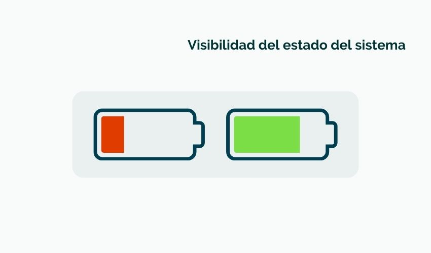
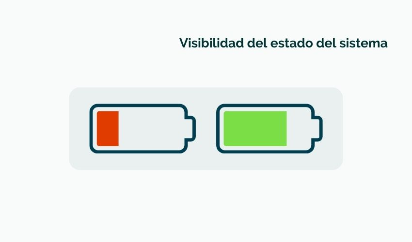
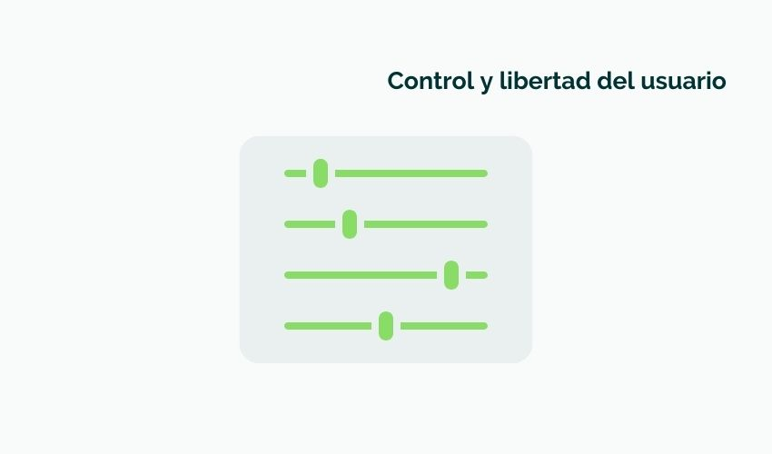
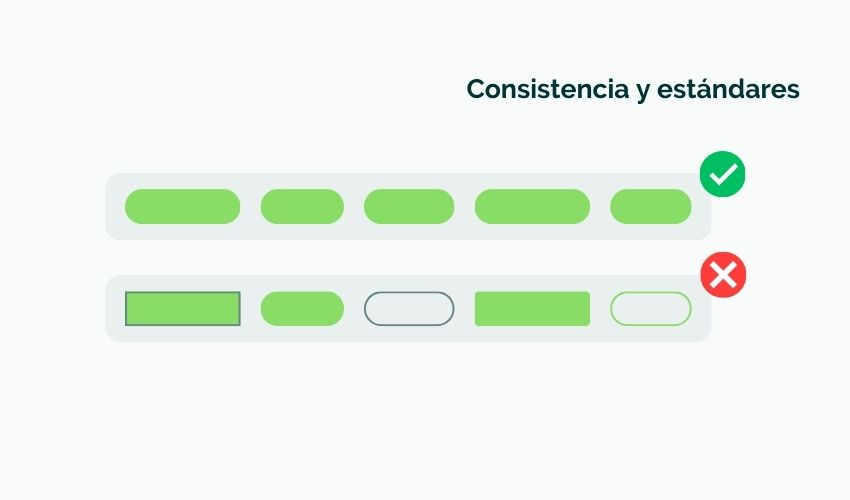
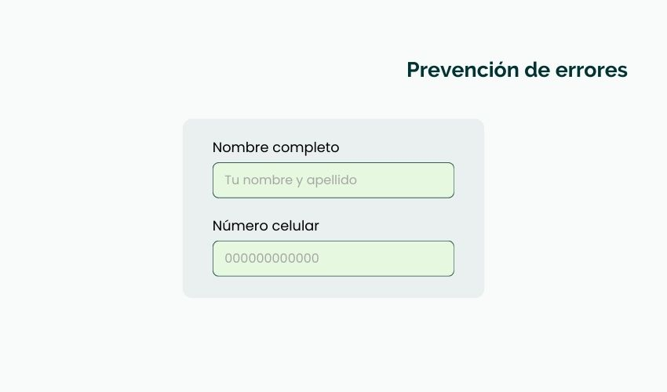
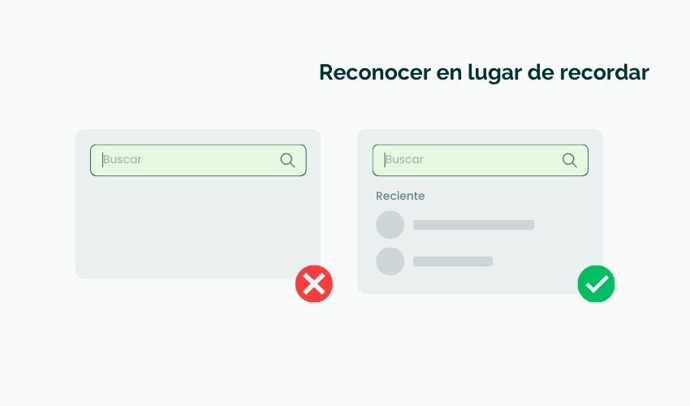
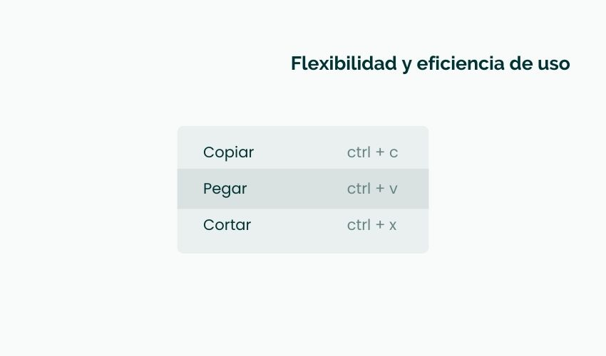
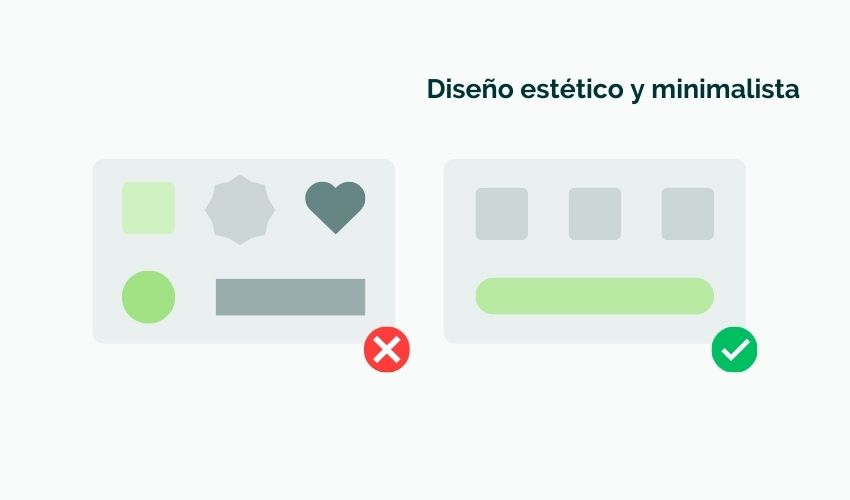
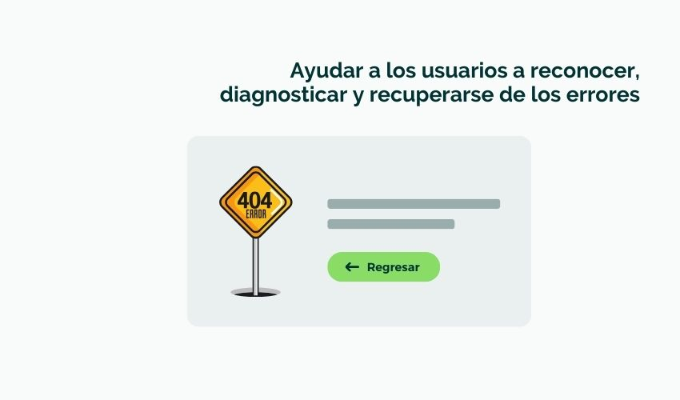
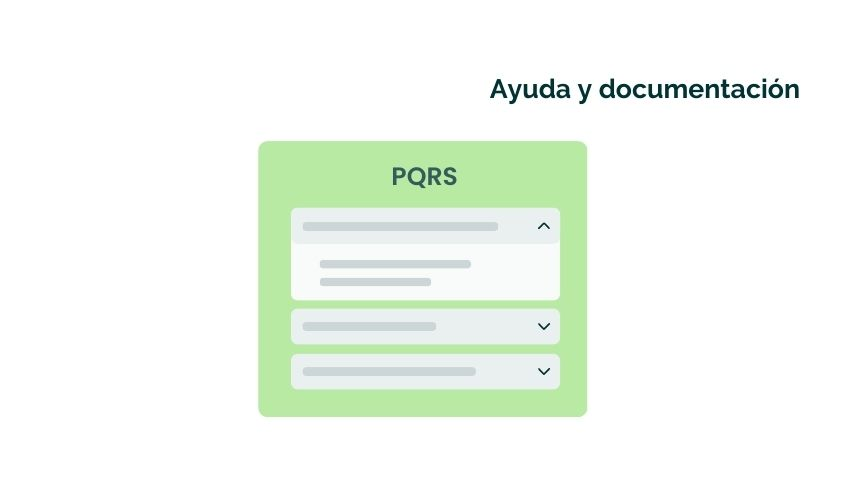

1. Visibilidad del estado del sistema
El sistema debe mantener informados a los usuarios sobre lo que está pasando, con feedback adecuado y en tiempo razonable.
La usabilidad web mide qué tan fácil y agradable es para los usuarios navegar y usar un sitio web, logrando sus objetivos sin frustración.
Un sitio usable aumenta la satisfacción, reduce el abandono, mejora la reputación y fomenta la fidelidad de los usuarios.
El sistema debe mantener informados a los usuarios sobre lo que está pasando, con feedback adecuado y en tiempo razonable.
El sistema debe usar lenguaje, conceptos y metáforas familiares para los usuarios.
Los usuarios deben poder deshacer acciones y salir de estados no deseados fácilmente.
El diseño debe mantener uniformidad y seguir estándares para evitar confusión.
Mejor que buenos mensajes de error es evitar que ocurran errores mediante diseño cuidadoso.
Minimizar la carga de memoria mostrando opciones, información y ayudas visibles.
Permitir que usuarios expertos usen atajos para acelerar su trabajo sin afectar a principiantes.
Evitar información irrelevante que distraiga, manteniendo un diseño limpio y claro.
Los mensajes de error deben expresarse en lenguaje claro y sugerir soluciones.
Aunque el sistema debe ser usable sin ayuda, es importante proveer documentación fácil de buscar y entender.
